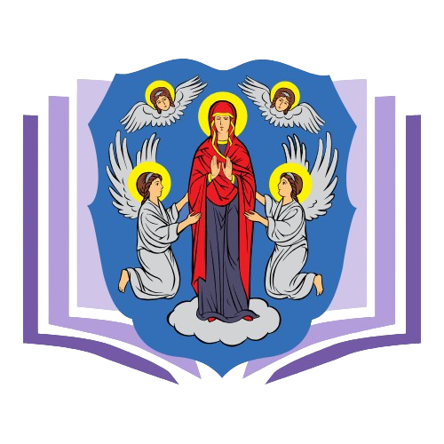

Yanka Kupala


I am a path, that never rests
The first and most popular poet of the Belarusian land, the representative of the people's interests, the tribune of the national revival, he became a literary classic for Belarusians and a real symbol of the nation.
An excursion dedicated to the outstanding Belarusian poet Yanka Kupala and his legacy.
Participants of the excursion will be able to visit:


We hope that you will enjoy our excursion and will help you better understand the life and work of Yanka Kupala, as well as learn more about the beautiful city of Minsk. Visiting all these places will allow excursion participants to:

Immerse yourself in the history of Minsk with a tour with Yakub Kolas!

Discover Minsk with Maxim Bogdanovich and immerse yourself in his literary heritage.

Immerse yourself in the world of literature on the mini-excursion “Belarusian writers on the map of Minsk” and “Minsk pages”!